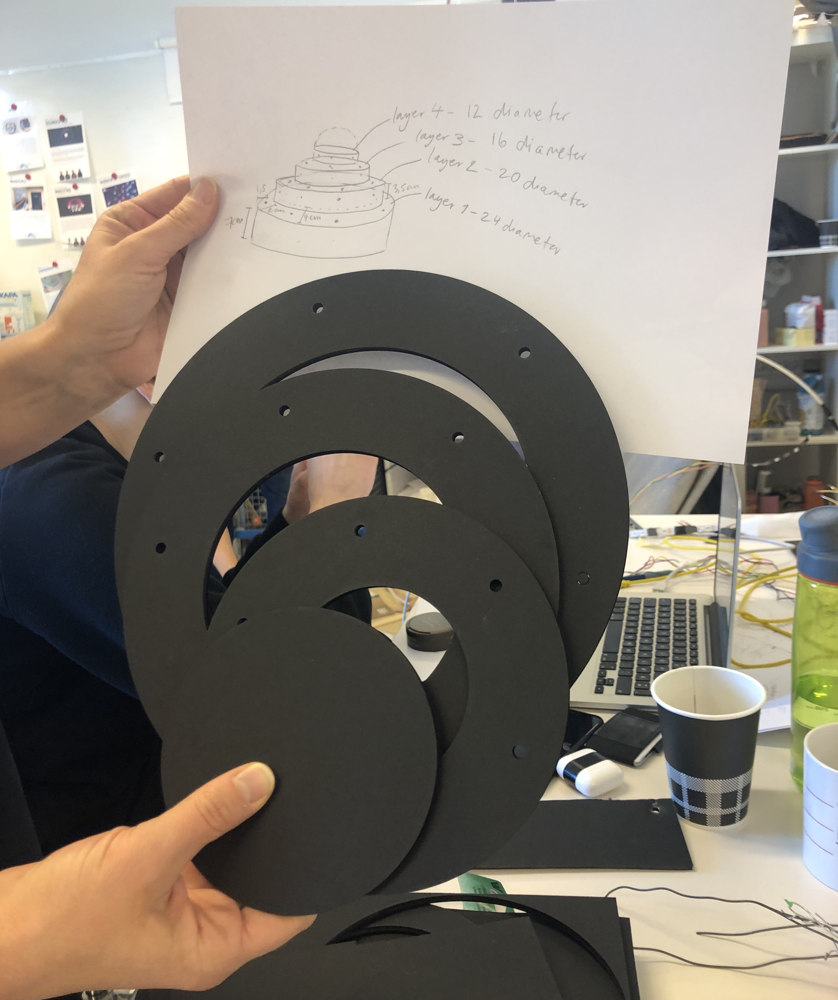
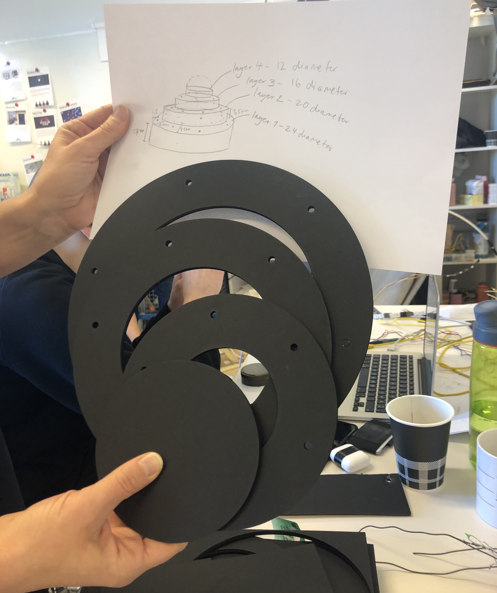

En blomst som puster i takt med deg.
Laget av: Brage Westvik Bråten, Siri, Vilde & Ida
Lotus Anima er en blomst som speiler pusten din i lysstyrke samt den åpner og lukker seg i takt med pusten din. Lotus Anima ble sluttresultatet i kurset Tangible Interaction hvor vi utforsket Somaestetikk
Kurset Tangible Interaction tar for seg rapid prototyping hvor mye fokus ble lagt på å idemyldring og legge fra seg ideer for å utforske andre ideer. Temaet for kurset var somaestetisk design hvor målet var å lage noe tangible som gir kroppslige sensasjoner/intrykk.
Lærdom fra kruset
- Rapid Prototyping
- Prototyper som design verktøy
- Utforskning av 'Look and Feel' prototyper
- Tett sammarbeid
- Ukentilig presentasjoner av arbeid og kritikk til arbeidet.


 
